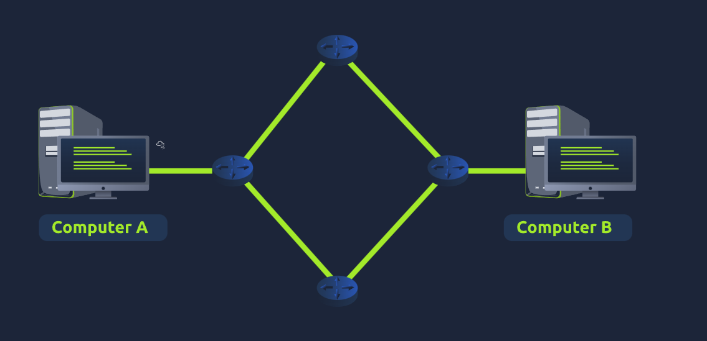
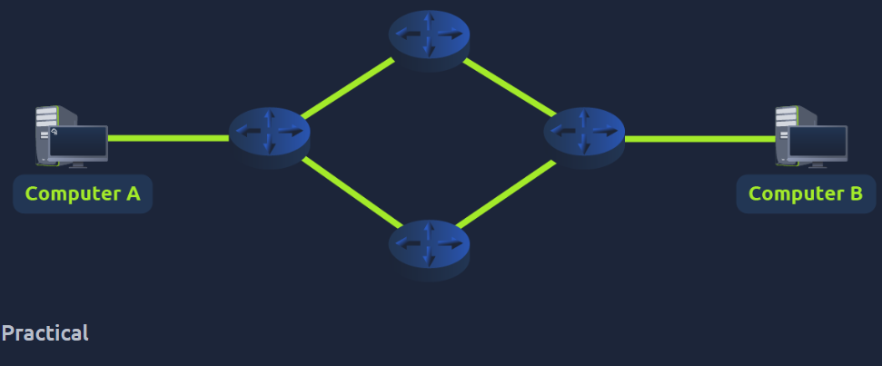
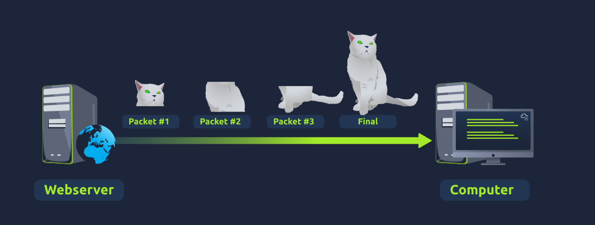
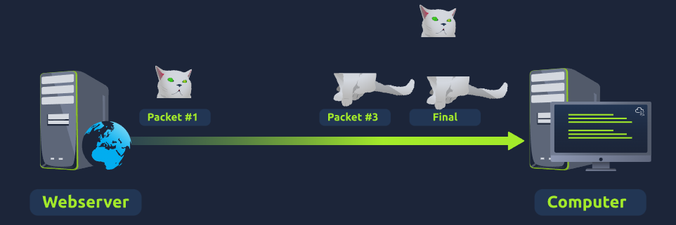

Learn about the fundamental networking framework — the seven layers that determine how data is handled across a network.
The OSI (Open Systems Interconnection) model is a critical framework that dictates how all networking devices send, receive, and interpret data. Devices with different functions and designs can still communicate because they follow the same model. Consists of seven layers (Layer 7 to Layer 1). At each layer, specific information is added to data — this process is called encapsulation.

The seven layers of the OSI model
The Physical layer references the physical hardware components used in networking. Devices transfer data via electrical signals in binary (1s and 0s). Ethernet cables connect devices at this layer.
The Data Link layer focuses on physical addressing. It receives packets from the Network layer and adds the physical MAC address of the receiving endpoint. Every network-enabled device has a Network Interface Card (NIC) with a unique MAC address set by the manufacturer — literally burnt into the card (cannot be changed but can be spoofed). Also presents data in a format suitable for transmission.
The Network layer is where routing and reassembly of data takes place. Routing determines the most optimal path based on: shortest path, reliability, and physical connection speed (copper vs fibre). Protocols: OSPF (Open Shortest Path First) and RIP (Routing Information Protocol). Everything dealt with via IP addresses. Routers are Layer 3 devices.

Routing — finding the most optimal path
The Transport layer transmits data using TCP or UDP. TCP is reliable and connection-based — reserves a constant connection, performs error checking, guarantees accuracy. Used for file sharing, browsing, email. Slower than UDP. UDP is stateless — no connection reserved, no error checking, no guarantee of delivery. Faster. Used for video streaming, ARP, DHCP, voice chat.

TCP — reliable but slower

UDP — fast but no delivery guarantee
The Session layer creates and maintains connections to other devices. Once a connection is established, a session is created and remains active while the connection is active. Sessions can contain checkpoints — if data is lost, only the newest pieces need re-sending, saving bandwidth. Sessions are unique; data cannot travel across different sessions.
The Presentation layer is where standardisation begins. Acts as a translator between the Application layer and the rest of the model — ensures data sent in one format can be understood by a device using another format. Security features such as data encryption (e.g. HTTPS) occur at this layer.
The Application layer is where protocols and rules determine how users interact with data sent and received. Everyday apps such as browsers and email clients provide a GUI (Graphical User Interface) for users. DNS — how website addresses are translated into IP addresses — also operates here.
A dungeon-style game where each door represents a layer of the OSI model. Two door options per level — must choose the correct layer in order to progress through the model from Layer 1 to Layer 7.